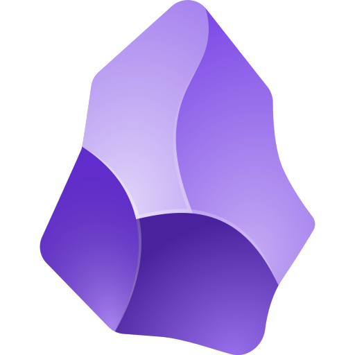
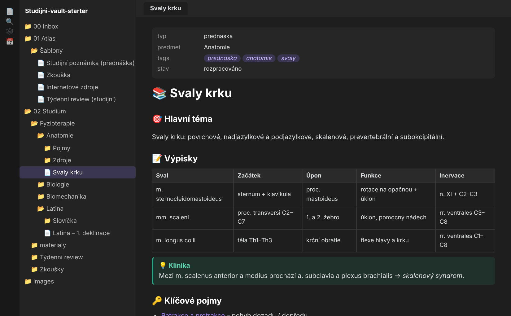
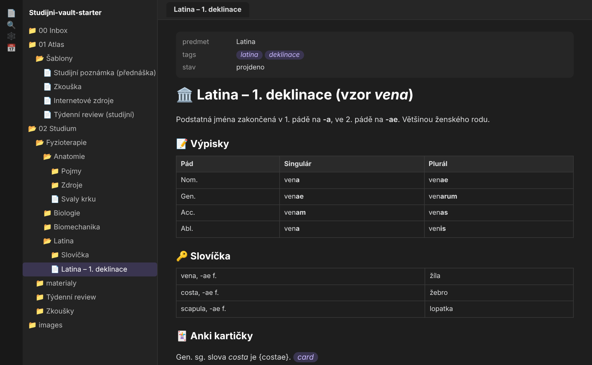
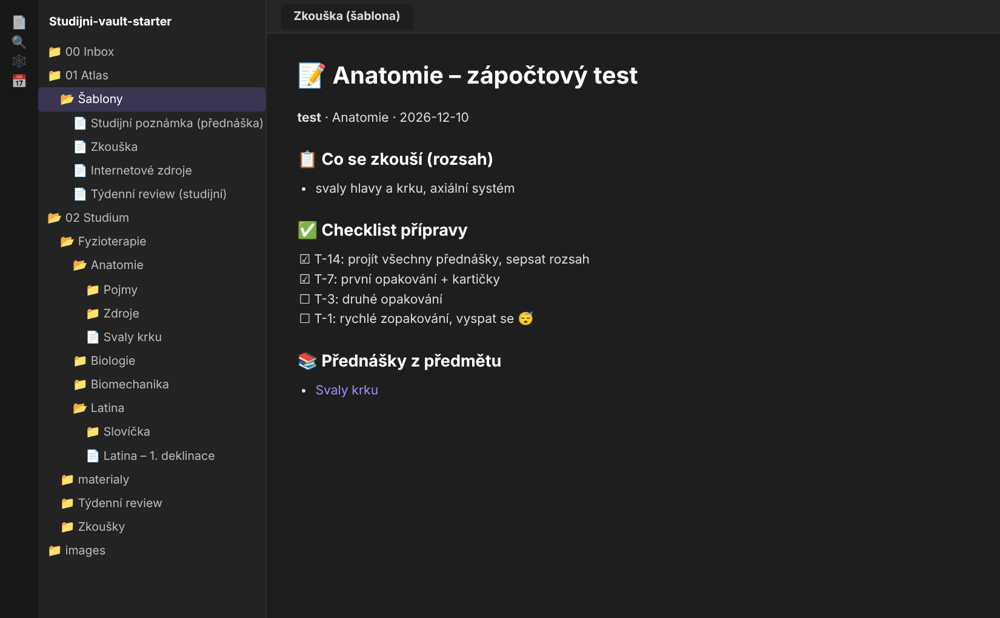

Obsidian – poznámky, které spolu souvisí
Obsidian je zdarma aplikace na poznámky v obyčejných textových souborech (Markdown). Poznámky propojuješ odkazy, takže z anatomie skočíš do latiny jedním klikem. Funguje na PC, Macu, iPhonu i Androidu – a offline.
⬇ Stáhnout startovací vault (ZIP) 🧭 Návod krok za krokemObrázky jsou zjednodušené nákresy – skutečné okno vypadá trochu jinak, ale názvy menu sedí (anglicky, v závorce česky). Podle oficiální nápovědy Obsidianu ↗.
2 · Vytvoř nebo otevři vault
Vault (trezor) = obyčejná složka v počítači, kde leží všechny tvoje poznámky.
- 1
Nejrychleji: náš startovací vault
Stáhni ZIP níže, rozbal ho a v Obsidianu klikni na Open folder as vault (Otevřít složku jako trezor). Vyber rozbalenou složku.
- 2
Nebo úplně od nuly
Create new vault → zadej název (třeba „Studium“) → vyber umístění → Create.
- 3
Přepínání vaultů
Vlevo dole klikni na název vaultu → Manage vaults… (vault switcher).
3 · Sync na iPhone / iPad
🍏 iCloud (zdarma)
- 1
Zapni iCloud Drive
iPhone: Nastavení → [tvoje jméno] → iCloud → iCloud Drive.
- 2
Založ vault v iCloudu
V Obsidianu na iPhonu: Create new vault → název → zapni Store in iCloud → Create.
- 3
Správná složka
Vault musí ležet v iCloud Drive → Obsidian (složka s ikonkou Obsidianu). Startovací vault tam z Macu nebo přes aplikaci Soubory jednoduše nakopíruj.
- 4
Mac
Na Macu: Open folder as vault → iCloud Drive → Obsidian. Tip: na složce Obsidian dej Keep Downloaded.
🔁 Alternativy
- Obsidian Sync – oficiální placený sync, funguje všude (Windows, Mac, iPhone, Android) a nejspolehlivěji.
- Windows + iPhone: oficiální nápověda varuje, že iCloud na Windows může dělat duplicity nebo poškodit soubory – počítej s tím, nebo zvaž Obsidian Sync.
- Android / PC: OneDrive, Google Drive, Syncthing nebo Git (na iPhonu oficiálně nepodporované).
- Nekombinuj dva synchronizační způsoby na jednom vaultu.
4 · Komunitní pluginy
- 1
Zapni je
Settings (⚙️ vlevo dole) → Community plugins → Turn on community plugins.
- 2
Najdi a nainstaluj
Browse → vyhledej název → Install → Enable.
Co používám já
Popisy podle oficiálního adresáře pluginů ↗. ⭐ = potřebují šablony ze startovacího vaultu.
- ⭐ Templater – dynamické šablony (datum, výběr předmětu, přesun poznámky).
- ⭐ Dataview – dotazy nad poznámkami: automatické seznamy přednášek a blížících se zkoušek.
- Full Calendar – události a kalendář přímo v poznámkách (zkoušky v kalendáři).
- Calendar – malý kalendář v postranním panelu pro procházení denních poznámek.
- Excalidraw – kreslení a úpravy schémat (svaly, klouby, myšlenkové mapy).
- Kanban – nástěnky úkolů uložené jako Markdown.
- Checklist – všechny checklisty ze všech poznámek v jednom přehledu.
- Tag Wrangler – přejmenování, slučování a hledání tagů z panelu tagů.
- Iconize – ikonky ke složkám, souborům i textu.
- Attachment Management – vlastní cesty pro přílohy a jejich automatické přejmenování.
- Editing Toolbar – panel nástrojů pro úpravy, podobný Wordu.
- Excel – tabulky (spreadsheety) vložené do poznámek.
- Book Search – poznámky ke knihám s údaji např. z Google Books.
- Clipper – ukládání zvýrazněných pasáží z webu.
5 · Složka se šablonami
- 1
Vestavěné šablony
Settings → Core plugins → Templates zapni, pak v nastavení Templates nastav Template folder location =
01 Atlas/Šablony. Ve startovacím vaultu už je to nastavené. - 2
Templater
Moje šablony používají Templater: Settings → Templater → Template folder location =
01 Atlas/Šablony. - 3
Použití
Ctrl/⌘+P (Command palette) → Templater: Create new note from template → vyber třeba Studijní poznámka (přednáška). Zeptá se na název a předmět a založí poznámku na správném místě.
6 · Propojování poznámek
[[Svaly krku]]– odkaz na poznámku. Když ještě neexistuje, kliknutím ji založíš.[[Svaly krku#Výpisky]]– odkaz přímo na nadpis.![[skripta.pdf]]– vloží PDF nebo obrázek přímo do poznámky.#anatomie– tag. V pravém panelu Backlinks vidíš, kdo na poznámku odkazuje.- Graph view (ikonka v levém pruhu) ukáže síť všech propojení.
Víc: Internal links ↗
👀 Jak to může vypadat
Ukázkové poznámky ze startovacího vaultu (nakreslené nákresy, ne snímky skutečného PC).



📁 Struktura složek
00 Inbox ← rychlé nápady, nové poznámky
01 Atlas/Šablony ← šablony
02 Studium/
Fyzioterapie/
Anatomie/ (Pojmy, Zdroje)
Latina/ (Slovíčka)
Biologie/ · Biomechanika/
Zkoušky/ ← 1 poznámka = 1 zkouška
Týdenní review/
materialy/ ← PDF, prezentace
images ← obrázky⬇ Startovací vault
Studijni-vault-starter.zip – složky, 4 šablony (Studijní poznámka, Zkouška, Internetové zdroje, Týdenní review), 3 ukázkové poznámky a README s návodem. Pluginy nejsou přibalené – nainstaluj si je podle kroku 4.
⬇ Stáhnout ZIP